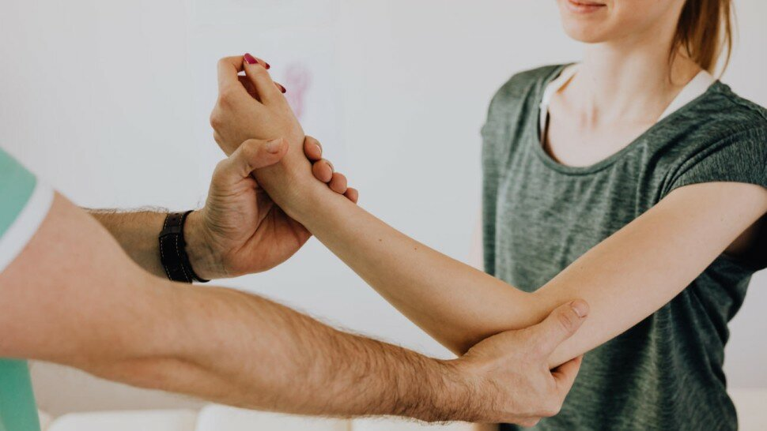

Quel remboursement santé pour des consultations d'ostéopathie ?

Sommaire
- Est-ce que l'ostéopathie est remboursée par la sécurité sociale et/ou des mutuelles ?
- Coût d'une consultation et remboursement
- Les ostéopathes sont-ils conventionnés et tous logés à la même enseigne ?
- A propos des tarifs : quel est le prix d'une consultation chez un ostéopathe ?
- Quelles mutuelles remboursent les consultations d'ostéopathie ?
- La sinistralité des consultations d'ostéopathie
- L'ostéopathie est-il prise en charge par la Complémentaire santé solidaire (ex-CMU-C) ?
- Sources
Est-ce que l'ostéopathie est remboursée par la sécurité sociale et/ou des mutuelles ?
Coût d'une consultation et remboursement
Les ostéopathes sont-ils conventionnés et tous logés à la même enseigne ?

A propos des tarifs : quel est le prix d'une consultation chez un ostéopathe ?
Le prix des consultations d’ostéopathie varie selon le mode de pratique qui peut demander plus de temps, le secteur géographique, la réputation de l’ostéopathe. Il oscille entre 50 € et 120 € et la durée de la consultations entre 20 minutes et une heure.
Sources
- Union pour la Recherche Clinique en Ostéopathie (URCO). http://www.osteopathie-recherche.fr
- Journal de l'Union pour la Recherche Clinique en Ostéopathie. http://www.lejournal.osteopathie-recherche.fr